Trabalho de Implementação 3
Ambiente de Desenvolvimento
- Mac OS X (v10.6.6)
- gcc 4.2.1
- FreeImage 3.15.0 (para manipulamento de texturas no formato JPG)
Desenvolvimento
Color e Depth buffers
Devido à necessidade de redimensionamento da janela e, consequentemente, do tamanho dos buffers, eles foram inicialmente implementados como vectors. Essa escolha resultou numa certa lentidão no processamento da cena, então a mudança para arrays foi realizada. A Listagem 1 apresenta o código utilizado para a geração dos buffers de cor e profundidade.
void close2gl_reset_buffers()
{
if (close2gl_depth_buffer != NULL) {
delete [] close2gl_depth_buffer;
}
if (close2gl_color_buffer != NULL) {
delete [] close2gl_color_buffer;
}
close2gl_depth_buffer = new float[close2gl_w * close2gl_h];
for (int i = 0; i < close2gl_w * close2gl_h; i++) close2gl_depth_buffer[i] = INT_MAX;
close2gl_color_buffer = new float[close2gl_w * close2gl_h * 4];
memset(close2gl_color_buffer, 0.0, close2gl_w * close2gl_h * 4 * sizeof(float));
}
Listagem 1 - Código para gerenciamento dos buffers de cor e profundidade.
Shading
Foram implementadas apenas coloração de triângulos para casos onde a iluminação estava desativada ou com Flat Shading. Implementações de Gouraud Shading e Phong Shading deveriam levar em consideração as normais de cada vértice, não apenas a normal da face do triângulo. A Listagem 2 apresenta o código utilizado para determinação da cor de um triângulo.
vector3f* close2gl_triangle_color(triangle t)
{
vector3f *color = new vector3f(options.r, options.g, options.b);
if (options.lighting) {
vector3f light(light_position[0], light_position[1], light_position[2]);
light = light - t.v0;
light.normalize();
vector3f normal = t.face_normal;
normal.normalize();
float light_projection = dotProduct(normal, light);
vector3f reflection = (2 * light_projection * normal) - light;
reflection.normalize();
vector3f viewer = camera->position - t.v0;
viewer.normalize();
float reflex = dotProduct(viewer, reflection);
float ambient, diffuse, specular;
ambient = options.r * options.ambient;
diffuse = options.r * options.diffuse * light_projection;
specular = options.r * options.specular * reflex;
color->x = ambient + diffuse + specular;
ambient = options.g * options.ambient;
diffuse = options.g * options.diffuse * light_projection;
specular = options.g * options.specular * reflex;
color->y = ambient + diffuse + specular;
ambient = options.b * options.ambient;
diffuse = options.b * options.diffuse * light_projection;
specular = options.b * options.specular * reflex;
color->z = ambient + diffuse + specular;
} else {
color->x = options.r;
color->y = options.g;
color->z = options.b;
}
return color;
}
Listagem 2 - Código para determinação da cor de um triângulo.
Rasterização
A Listagem 3 apresenta o código para rasterização de pontos.
void close2gl_raster_point(int x, int y, int z, vector3f *color)
{
int pos = 4 * (x + y * close2gl_w);
if (z < close2gl_depth_buffer[pos / 4]) {
close2gl_depth_buffer[pos / 4] = z;
close2gl_color_buffer[pos] = color->x;
close2gl_color_buffer[pos + 1] = color->y;
close2gl_color_buffer[pos + 2] = color->z;
close2gl_color_buffer[pos + 3] = 1.0;
}
}
Listagem 3 - Código para rasterização de um ponto.
A Listagem 4 apresenta o código para rasterização de linhas.
void close2gl_raster_line(int x0, int y0, int z0,
int x1, int y1, int z1, vector3f *color)
{
int dx = x1 - x0;
int dy = y1 - y0;
int dz = z1 - z0;
int points = max(abs(dx), abs(dy));
float inc_x = dx / (float) points;
float inc_y = dy / (float) points;
float inc_z = dz / (float) points;
close2gl_raster_point(x0, y0, z0, color);
for (int i = 0; i < points; i++) {
close2gl_raster_point(x0 + inc_x * i, y0 + inc_y * i, z0 + inc_z * i, color);
}
}
Listagem 4 - Código para rasterização de uma linha entre dois pontos.
Vários algoritmos de rasterização de triângulos foram testados. Alguns eram relativamente simples, mas sofriam com problemas nos limites do triângulo. Visando a implementação de interpolação perspectivamente correta de texturas, o algoritmo para rasterização de triângulos escolhido foi o descrito em [1].
Resultados
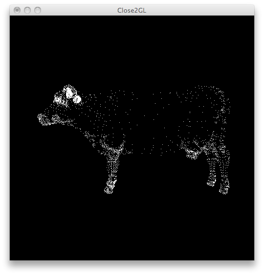
Comparação 1 - Renderização de pontos (point)
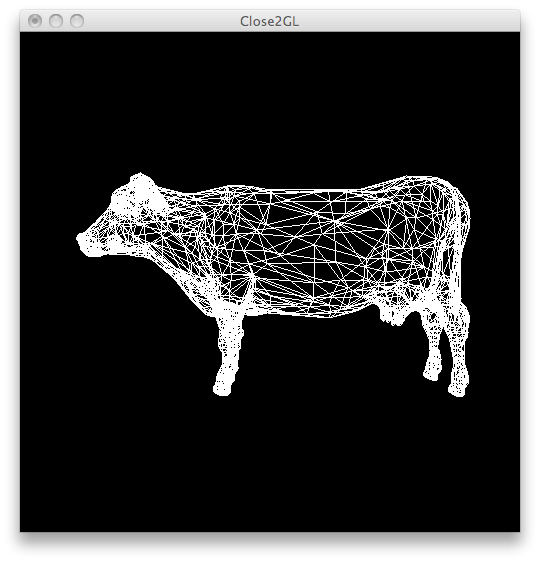
Comparação 2 - Renderização de linhas (wireframe)
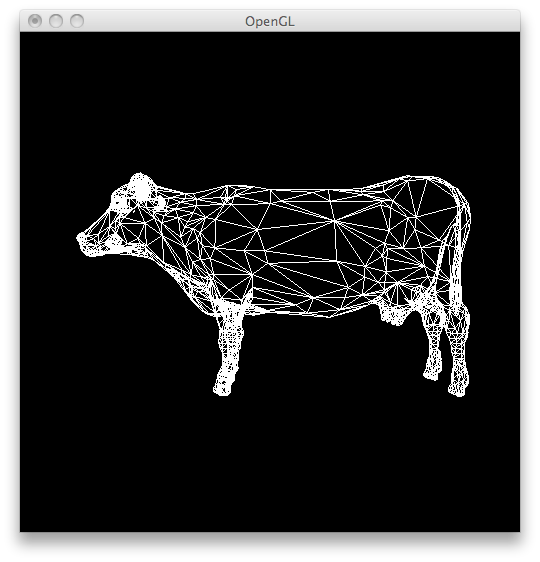
Comparação 3 - Renderização de linhas (wireframe) com Backface Culling ativado
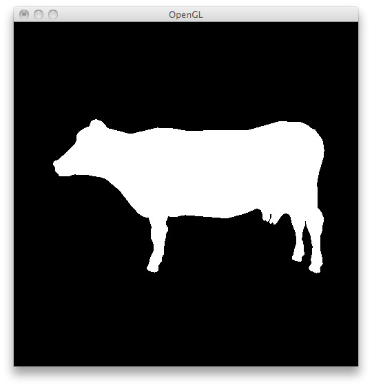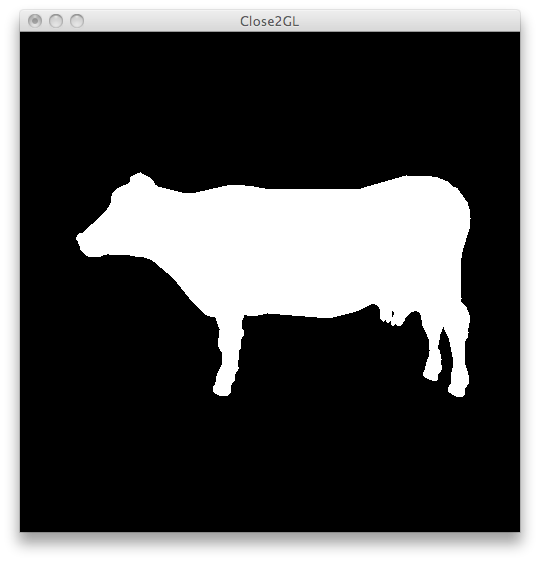
Comparação 4 - Renderização de sólidos (solid)
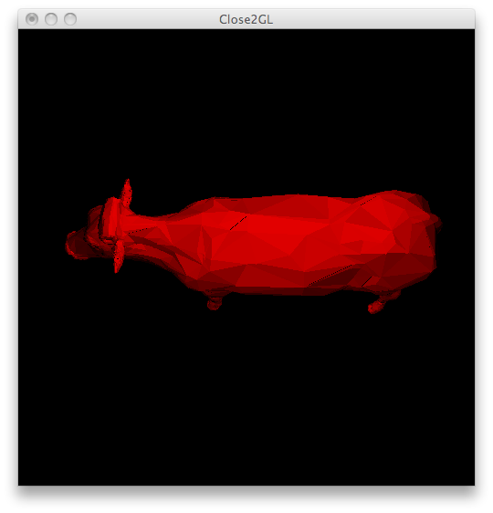
Comparação 5 - Flat Shading
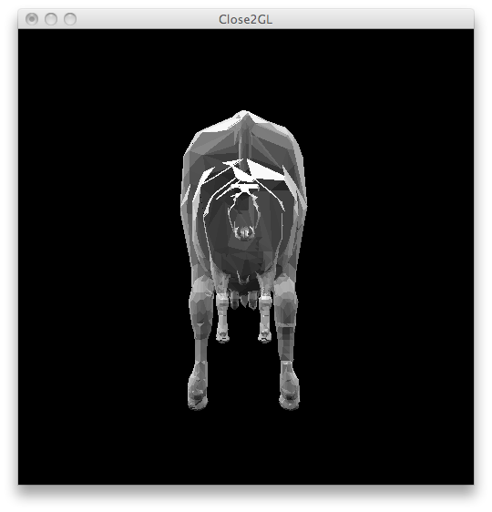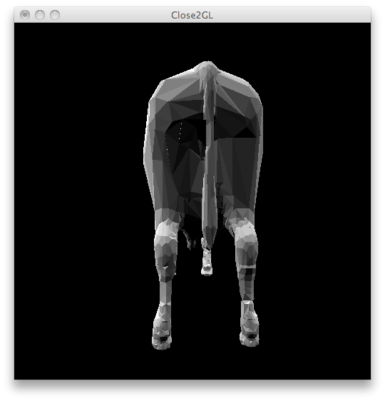
Comparação 6 - À esquerda, Close2GL utilizando Z-Buffer. À direita, Close2GL utilizando W-Buffer. Note que na primeira imagem ocorrem problemas devido à resolução do Z-buffer. Na imagem da direita, esses problemas foram resolvidos com a utilização de W-Buffer.
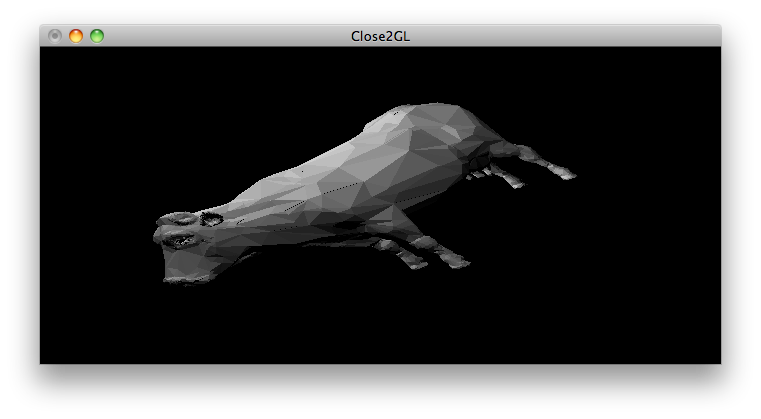
Imagem 1 - Redimensionamento de janela em Close2GL
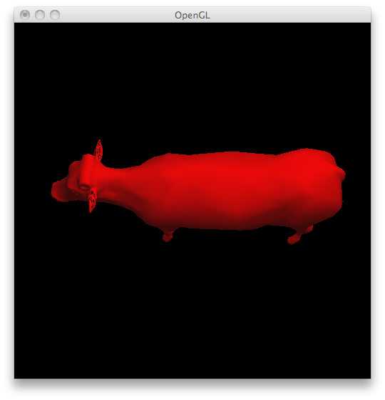
Imagem 2 - Gouraud Shading em OpenGL
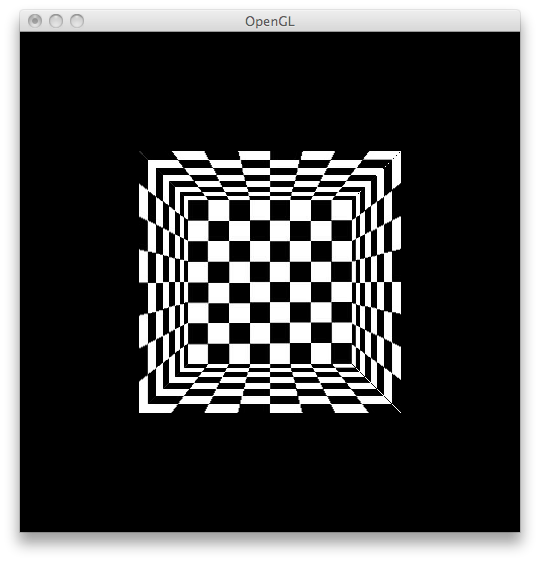
Imagem 3 - Texturas com Nearest Neighbors em OpenGL
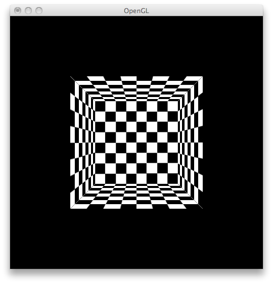
Imagem 4 - Texturas com Bilinear Re-sampling em OpenGL
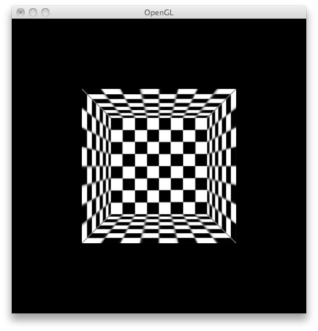
Imagem 5 - Texturas com Mip-mapping em OpenGL
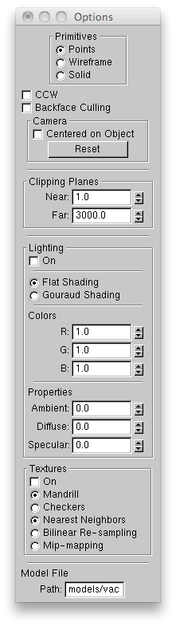
Imagem 5 - GUI
Código-fonte
http://github.com/tmattia/ufrgs-cg